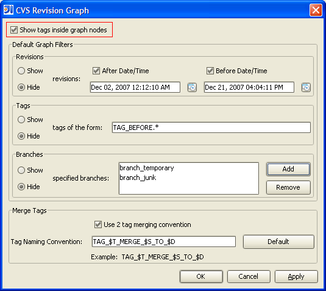

General Options
Currently, the only general option is the option to enable/disable the rendering of tag names within the revision graph nodes. This can help to reduce the size and speed of the overall graph generation.
